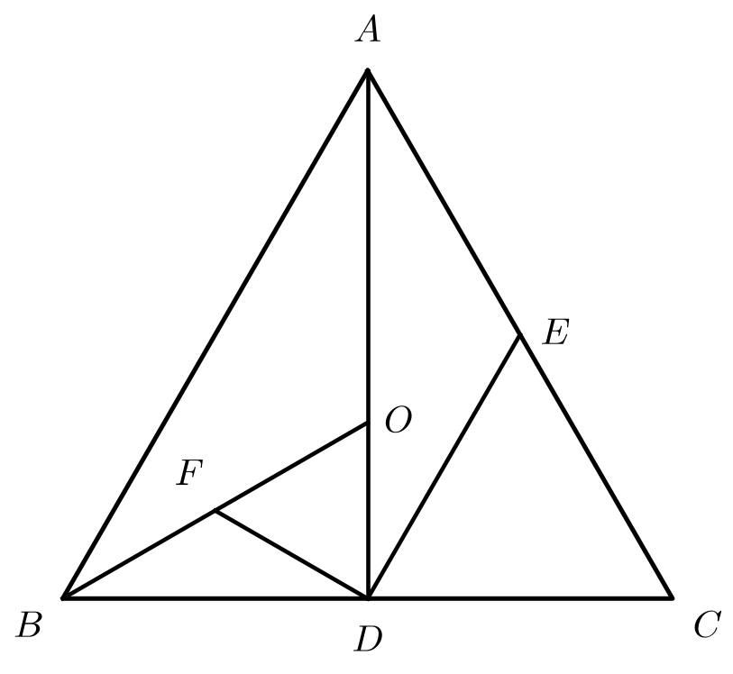

11. Тохиромжтой алхмын уртыг сонгох
Энэ параграфаас эхлэн дараагийн дөрвөн параграфт бид математикийн индукцийн аргаар бодлого батлахад хэрэглэгддэг зарим түгээмэл техникийг танилцуулах болно.
Энд k-г алхмын урт гэнэ. k = 1 үед энэ нь математикийн индукцийн нэгдүгээр хэлбэр болно. Зарим бодлогод илүү том алхмын урт сонгох нь хамаагүй тохиромжтой байдаг.
Баталгаа. Бид энэ бодлогын суурь санааг x^3 + y^3 = z^3 тодорхойгүй тэгшитгэлд эерэг бүхэл шийд байхгүй гэдэг үр дүнтэй харьцуулан ойлгож болно.
n = 3 үед 3^3 + 4^3 + 5^3 = 6^3 тэнцэтгэлээс өгүүлбэр үнэн болохыг харж болно.
n = 4 үед 5^3 + 7^3 + 9^3 + 10^3 = 13^3 (үүнийг анх Эйлер нээсэн) тэнцэтгэлээс өгүүлбэр үнэн болохыг харна.
Одоо n (n \geqslant 3) үед өгүүлбэр үнэн, өөрөөр хэлбэл x_1^3 + x_2^3 + \dots + x_n^3 = y^3 нөхцөлийг хангах эерэг бүхэл x_1 < x_2 < \dots < x_n < y тоонууд оршино гэж таамаглая.
Тэгвэл 6^3 = 3^3 + 4^3 + 5^3 тэнцэтгэлийг ашиглавал: \begin{aligned} (6y)^3 &= (6x_n)^3 + \dots + (6x_2)^3 + (6x_1)^3 \\ &= (6x_n)^3 + \dots + (6x_2)^3 + (5x_1)^3 + (4x_1)^3 + (3x_1)^3. \end{aligned} Энэ нь n + 2 үед өгүүлбэр үнэн болохыг харуулна.
Тиймээс аливаа n \geqslant 3 хувьд өгүүлбэр хүчинтэй.
Баталгаа. n = 3 үед зөв ABC гурвалжны төвийг O гэж авбал \triangle AOB, \triangle BOC, \triangle COA нь бүгд адил хажуут гурвалжнууд болно. Иймд n = 3 үед өгүүлбэр үнэн.
n = 4 үед BC, CA, AB талуудын дундаж цэгүүдийг харгалзан D, E, F гэе. Тэгвэл \triangle AEF, \triangle FBD, \triangle DCE, \triangle DEF нь бүгд адил хажуут гурвалжнууд болно. Иймд n = 4 үед өгүүлбэр үнэн.

n = 5 үед Зураг 6-д харуулсны дагуу зөв ABC гурвалжны төвийг O, BC ба CA талуудын дундаж цэгүүдийг харгалзан D, E, харин BO хэрчмийн дундаж цэгийг F гэж авъя. Тэгш өнцөгт гурвалжны гипотенузад татсан медиан нь гипотенузын хагастай тэнцүү тул \triangle ABO, \triangle BFD, \triangle FOD, \triangle DEC, \triangle ADE нь бүгд адил хажуут гурвалжнууд болно. Иймд n = 5 үед өгүүлбэр үнэн.
Одоо аливаа зөв гурвалжныг n (n \geqslant 3) ширхэг адил хажуут гурвалжинд хувааж чадна (өөрөөр хэлбэл, n үед өгүүлбэр үнэн) гэж таамаглая. Тэгвэл зөв ABC гурвалжны BC, CA, AB талуудын дундаж цэгүүдийг харгалзан D, E, F гэж аваад зөв AEF гурвалжныг n ширхэг адил хажуут гурвалжинд хуваая. Эдгээр n гурвалжныг \triangle BDF, \triangle CDE, \triangle DEF гурвалжнуудтай нийлүүлбэл зөв ABC гурвалжныг n + 3 ширхэг адил хажуут гурвалжинд хуваасан болно. Иймд n + 3 үед өгүүлбэр үнэн.
Дээрхийг нэгтгэвэл аливаа n \geqslant 3 хувьд өгүүлбэр үнэн.
Баталгаа. n = 1 үед дурын x, y \in \mathbf{N}^* хувьд (x, y, x^2 + y^2) нь (1)-ийн эерэг бүхэл шийд болно; n = 2 үед m > n \geqslant 1 (m, n \in \mathbf{N}^*) аваад x = m^2 - n^2, y = 2mn, z = m^2 + n^2 гэж тавьбал x^2 + y^2 = z^2 болно. Тиймээс n = 1, 2 үед өгүүлбэр үнэн.
Одоо n үед өгүүлбэр үнэн гэж таамаглая. Эерэг бүхэл x, y, z тоонуудын хувьд хэрэв x^2 + y^2 = z^n бол (xz)^2 + (yz)^2 = z^{n+2} болно. Иймд x^2 + y^2 = z^{n+2} тодорхойгүй тэгшитгэлд төгсгөлгүй олон эерэг бүхэл шийд оршино. n = 1, 2 үед өгүүлбэр үнэн гэдгийг тооцвол аливаа n \in \mathbf{N}^* хувьд өгүүлбэр үнэн.
Тайлбар. Энэ бодлогыг мөн дараах аргаар бодож болно: z = a + b\mathrm{i} (a, b \in \mathbf{N}^*, 0 < \arg z < \frac{\pi}{n}; a^2 + b^2-ийн утгууд ялгаатай байх ийм (a, b) хосууд төгсгөлгүй олон бий) гэе. Ньютоны биномын теорем ёсоор z^n = (a + b\mathrm{i})^n = x + y\mathrm{i} (x, y \in \mathbf{Z}, xy \neq 0, учир нь \arg z^n \in (0, \pi)) болно. Хоёр талаас модуль авбал (\sqrt{a^2 + b^2})^n = \sqrt{x^2 + y^2} буюу x^2 + y^2 = (a^2 + b^2)^n гарна. Иймд (\vert{}x\vert{}, \vert{}y\vert{}, a^2 + b^2) нь x^2 + y^2 = z^n тэгшитгэлийн эерэг бүхэл шийд болно.
Бодолт. (1)-д m = n = 0 гэж орлуулбал f(0) = 2f(0)^2 болох тул f(0) = 0 эсвэл \frac{1}{2} гарна. f(0) \in \mathbf{N} тул f(0) = 0. Иймд (1)-ээс аливаа m \in \mathbf{N} хувьд f(m^2) = f(m)^2 биелнэ.
Эхлээд n \in \{1, 2, \dots, 10\} хувьд f(n)-ийн утгыг олъё.
Нөхцөл болон өмнөх үр дүнгээс f(1) = f(1^2) = f(1)^2 болох ба f(1) > 0 тул f(1) = 1. Цаашилбал: \begin{aligned} f(2) &= f(1^2 + 1^2) = f(1)^2 + f(1)^2 = 1 + 1 = 2; \\ f(4) &= f(2^2) = f(2)^2 = 4; \\ f(5) &= f(2^2 + 1^2) = f(2)^2 + f(1)^2 = 5; \\ f(8) &= f(2^2 + 2^2) = f(2)^2 + f(2)^2 = 8. \end{aligned} Мөн 25 = f(5)^2 = f(5^2) = f(3^2 + 4^2) = f(3)^2 + f(4)^2 = f(3)^2 + 16 ба f(3) \in \mathbf{N} тул f(3) = 3 болно. Тиймээс: \begin{aligned} f(9) &= f(3)^2 = 9, \\ f(10) &= f(3^2 + 1^2) = f(3)^2 + f(1)^2 = 10. \end{aligned} (1) нөхцөл болон 7^2 + 1^2 = 5^2 + 5^2 гэдгийг ашиглан f(7) = 7-г олно. Дараа нь 10^2 = 6^2 + 8^2 гэдгээс f(10)^2 = f(6)^2 + f(8)^2 буюу f(6) = 6 гарна.
Иймд бүх 0 \leqslant n \leqslant 10 хувьд f(n) = n.
Одоо 5-ын алхамтай индукцээр аливаа n \in \mathbf{N} хувьд f(n) = n болохыг баталъя.
Үүний тулд дараах адилтгалуудыг ашиглая: \begin{aligned} (5k + 1)^2 + 2^2 &= (4k + 2)^2 + (3k - 1)^2; \\ (5k + 2)^2 + 1^2 &= (4k + 1)^2 + (3k + 2)^2; \\ (5k + 3)^2 + 1^2 &= (4k + 3)^2 + (3k + 1)^2; \\ (5k + 4)^2 + 2^2 &= (4k + 2)^2 + (3k + 4)^2; \\ (5k + 5)^2 &= (4k + 4)^2 + (3k + 3)^2. \end{aligned} k \geqslant 2 үед адилтгалуудын баруун талын гишүүн бүр нь зүүн талын эхний гишүүнээс бага байна. Иймд (1) нөхцөл болон индукцийн таамаглал ёсоор адилтгалуудын зүүн талын эхний гишүүн дээрх функцийн утгуудыг тодорхойлж чадна. Өөрөөр хэлбэл, тав таван тоо алгасан индукцлэхэд өгүүлбэр үнэн болно.
Тиймээс аливаа n \in \mathbf{N} хувьд f(n) = n.
Тайлбар. Дээрх жишээнээс харахад k алхмын урттай индукцээр P(n)-ийг батлах нь үндсэндээ \{P(n)\} өгүүлбэрүүдийг k ширхэг дэд олонлогт хувааж тус бүрд нь батлахтай ижил юм. Мэдээж бид энэ санааг математикийн индукцийн хоёрдугаар хэлбэртэй хослуулан нэг бүлэг өгүүлбэрийг нөгөөг батлахад ашиглаж болно. Дээрх жишээ үүнийг харууллаа.